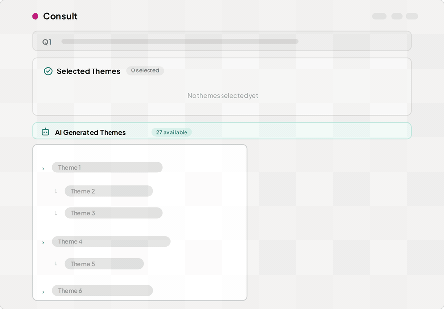
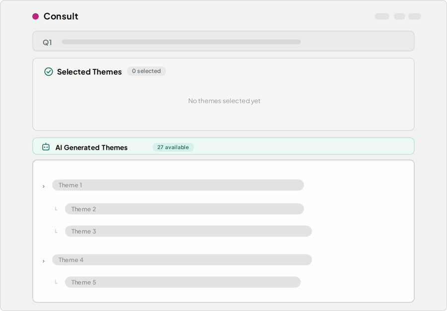
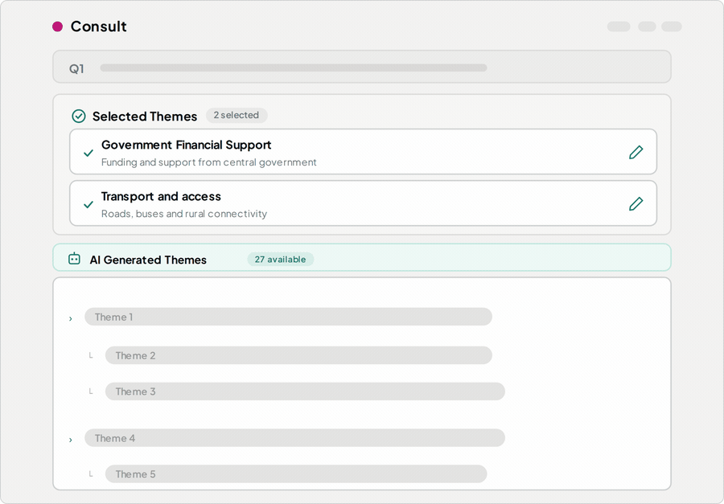
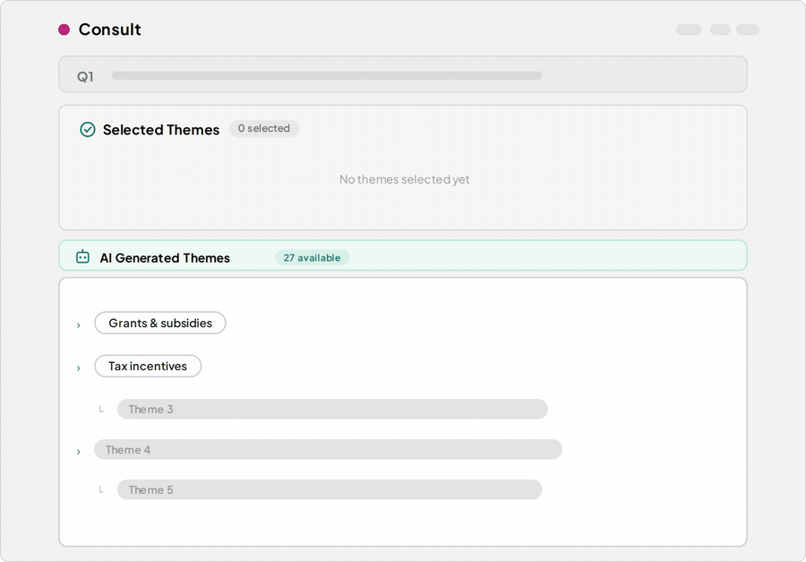
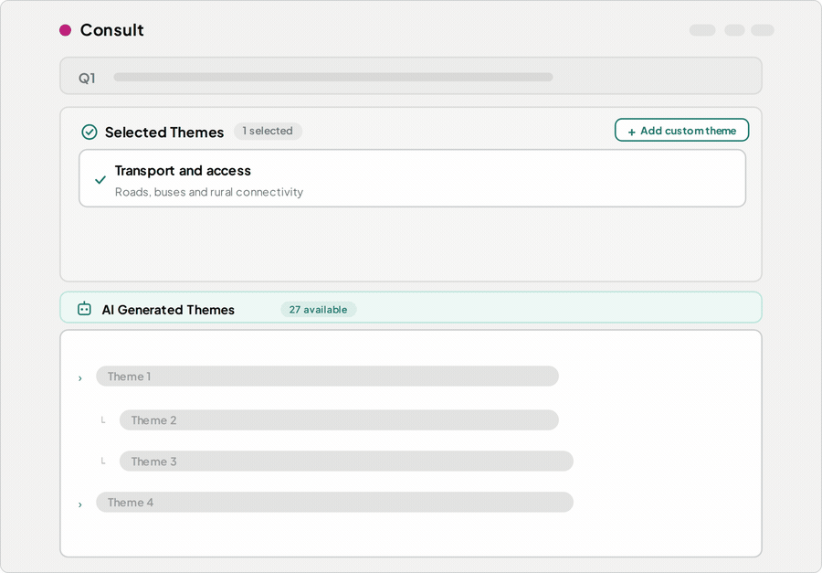
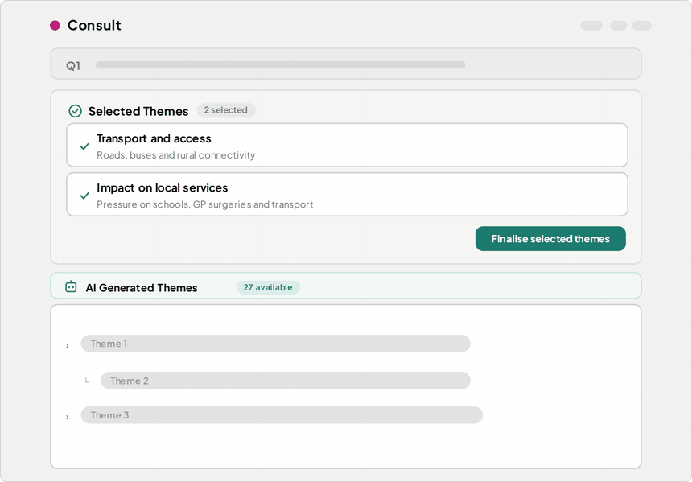

Finalise themes
This is where you review the themes suggested by artificial intelligence (AI) to decide which ones to use for your analysis.
It is the first time you engage closely with what the consultation responses said, and the choices you make here shape the rest of your analysis.
Allow at least a couple of hours per question and block out time as a team to work through it together.
Themes are identified for each question. You work through one question at a time, deciding which themes to select, edit or create. The themes you select become your final list, and the AI uses them to assign every response.
You decide which themes to use, not the AI. The AI found a starting set. You're the expert on your policy area, so you choose what matters for your analysis.
Step 1: Review the themes the AI found
You need to review each theme by checking:
- both the theme title and description make sense.
- the representative responses adequately reflect theme.
- the count of responses “39 of 250 responses” to see how prominent the theme is.
Once you select a theme you can no longer see its representative responses. To see them again you'd have to deselect it and start over.
You won't always agree with every assignment, but that doesn't mean the theme is wrong. Make sure that most responses fit the theme.

Here we're clicking a theme to open its representative responses and checking the count showing “39 of 250 responses” to see how prominent the theme is and decide whether the theme captures what people said before selecting it.
Understanding parent and child themes
If there are a lot of themes, they will usually be grouped into 2 levels:
- Parent themes or level 1 themes are broader categories.
- Child themes or level 2 themes sit underneath and are more specific.
- Where a theme has both levels, select either the parent or the child — not both.
- How granular you go depends on what your analysis needs.
- To combine several child themes, it's often easier to select the parent and edit its title and description to cover what you need.
Once you finalise themes for a question you cannot go back and change it.
'Other' and 'No Reason Given' themes
Consult always adds two categories to every question: 'Other' and 'No Reason Given' Here's what you need to know:
- You don't create or select 'Other' and 'No Reason Given' they're added automatically, so every response is covered and none are left out of your analysis.
- 'Other' holds responses that don't fit any of the themes you selected.
- 'No Reason Given' holds responses where the person didn't give a reason to analyse. For example, a blank answer or
no comment
or something not relevant to the question.
Step 2: Select themes you want to keep or edit
When deciding on what themes to select, think about what you'll write in your consultation response and which themes help you structure it.
If you want to keep a theme or edit a theme, click select
. This will move the theme into your selected themes. These are the themes used for your analysis.
When you decide your final themes, consider what your analysis needs.
For example, do themes in your final set of themes:
- answer your policy question(s)?
- raise other insights?
- give a representative overview?
Record your decisions. You may need evidence of what you kept, edited, merged or added and why.

Here we're selecting a theme to move it into the selected themes panel. You have to select a theme in order to edit it. Only the selected themes are used in the analysis.
Back to topStep 3: Edit or merge themes you have selected
Edit themes
You don't have to use the AI's wording. Edit a theme's title or description so it fits your policy context. For example, if a theme is close but uses different terminology from your policy area, change it to match how you'll refer to it in your response.
The title and description you set are sent to the AI to assign responses, so write them the way you want the theme understood
Don't worry about making it worse. Your edits make the themes more useful for your analysis, and you know your policy area better than the AI does.

Here we're editing a theme's title and description to best reflect what the responses say or matching your policy wording.
Merge themes
Sometimes you may feel there are themes that are similar and do not need to be separate.
To merge two themes:
- select one of the themes and edit its title and description to cover both.
- leave the other theme unselected.
- when the AI assigns responses, anything that would have matched either theme will be assigned to your merged theme

Here we are merging two themes by selecting one of the themes and then editing it to widen the description to cover both themes and leaving the second theme unselected.
Back to topStep 4: Add a new theme
If you spot something in the responses that the AI hasn't captured, add your own.
To add a new theme:
- click
Add custom theme
in the top right of the selected themes frame. - give your theme a title and description.
- click
Add theme
to create your new theme.
The AI will use your new theme when assigning responses to themes.
You do not have to add a new theme if you think the themes generated by the AI represent what the responses are saying and cover what you need.

Here we are adding a custom theme to capture something the AI missed, then giving it a title and description so the AI can assign responses to it at the next step.
Back to topStep 5: Finalise your themes for each question
Once you have selected and edited your themes, you need to confirm you are happy with your final list of themes for each question. To do this:
- make sure you and your team are completely happy with your themes.
- click
finalise selected themes
at the top of the question view.
Once you finalise themes for a question you cannot go back and change it.

Here we are finalising the selected themes for a question. Once you do this the question's themes are locked and can't be changed.
Back to topStep 6: Confirm you have finalised your themes for all questions
Once you have finalised your themes for all questions you confirm this by clicking finalise themes
at the top. This starts the process of the AI Assigning themes.